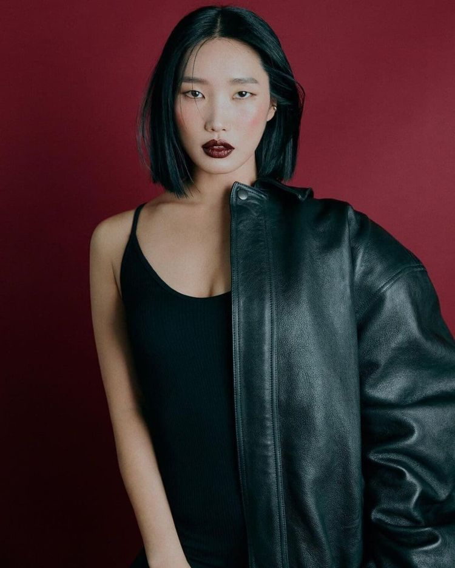

대한민국의 댄서, 안무가, 댄스 트레이너, 사업가. 댄스의 주 장르는 왁킹이다.
입술이 예쁘다는 칭찬을 받아서 입술을 뜻하는 Lip에 본명 조효원의 이니셜 J를 붙여 활동명을 지었다고 한다.

스트릿 우먼 파이터나 유튜브에서 보여지는 소탈한 이미지와 달리 세계적인 인지도를 가진 왁킹 댄서(왁커)이며 세계 대회에서는 심사위원으로 초청받는 입지를 가졌다. 특히 왁킹에서 중요한 요소를 차지하는 태도(Attitude)면에서 타의 추종을 불허하는 바이브를 가지고 있다고 평가된다.
홀리데이인 왁킹, 와커스나잇 등 왁킹 대회에서 우승했고 와커스 나잇, 힙합버스 나잇 등의 대회에서 심사를 한 경력이 있다. 그리고 무려 100회 이상 댄스 배틀에 참가하였는데 유튜브에 춤 실력과 센스로 관객들을 흥분시키는 레전드 배틀 영상이나 저지 쇼케이스 영상이 많이 있다. 그녀의 팬들이라면 찾아보길 추천한다.
스트릿 우먼 파이터에 출연한 댄서들은 립제이를 '배틀러', '댄서들의 댄서'라고 칭했다. 그녀가 얼마나 한국 댄스 씬에서 큰 입지를 가졌는지를 단적으로 알 수 있는 장면. 또한 스우파의 흥행 이후 립제이 본인의 캐릭터가 큰 반향을 일으키며 각종 예능과 광고 섭외 1순위의 인플루언서가 되었다. 같은 팀의 리더이자 한 집의 동거인인 모니카와는 부부 케미를 보이면서 예능이나 쇼 프로그램엔 두 사람이 항상 같이 섭외되고 있다